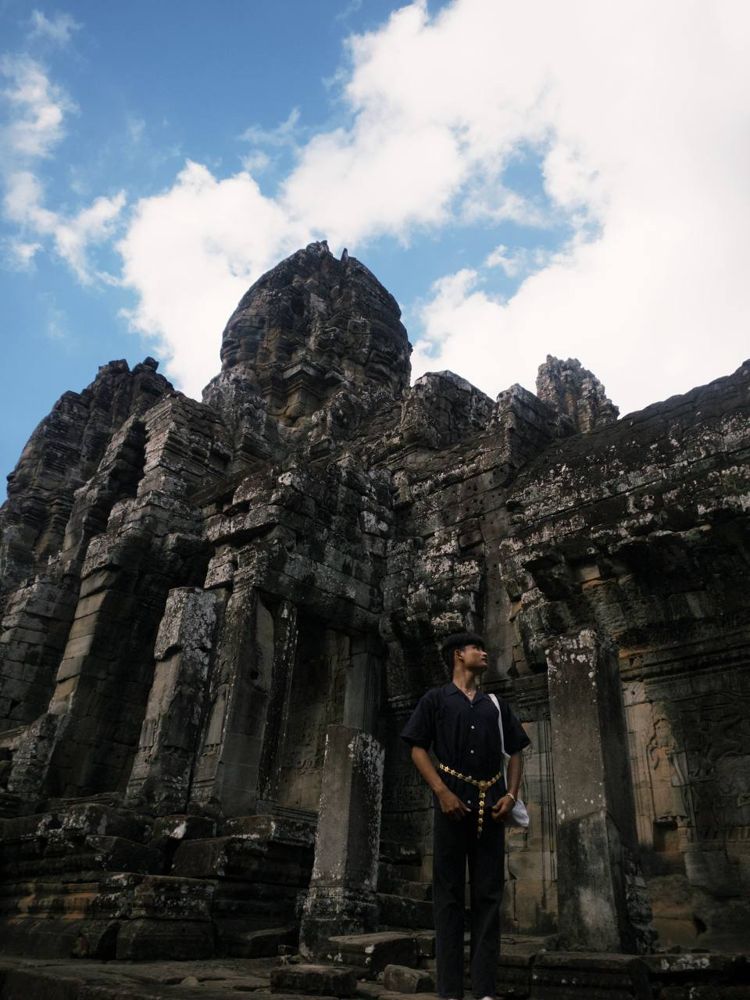

ខ្ញុំឈ្មោះ សុន សេង បច្ចុប្បន្ននេះខ្ញុំគឺជាសិស្សមួយរូបដែលកំពុងសិក្សាក្នុងថ្នាក់ទី១០នៃកម្មវិធីសាលារៀនជំនាន់ថ្មីវិទ្យាល័យព្រែកលៀប។ការកកើតក្នុងការចូលប្រឡូកវិស័យអប់រំលើកដំបូងរបស់ខ្ញុំគឺកាលពីឆ្នាំ២០១៥ដែលវាបានបន្តមករហូតដល់បច្ចុប្បន្ន។ហើយខ្ញុំគឺជាមនុស្សម្នាក់ដែលចូលចិត្តភាពរីករាយ សំណើចនិងការចូលរួមសកម្មភាពសង្គមនានា ហើយខ្ញុំនិងបន្តធ្វើវារហូតដល់ដែនកំណត់ដែលខ្ញុំត្រូវសម្រាក។
